论文：Automatic Polygon Layout for Primal-Dual Visualization of Hypergraphs
作者：Botong Qu, Eugene Zhang, and Yue Zhang
发表：VIS 2021
N-元关系通常使用多边形表示。基于手动调整的方法能获得不错的布局效果，但是耗时耗力。为了自动生成高质量的以多边形为超节点的图布局，本文基于能量最小化的思路定义了一系列原则和优化算法。通过与三种传统方法的对比用户实验，验证了本方法在效率和准确率上有显著优势。此外，本文还同时考虑了对偶图的优化，帮助用户加速完成特定任务。
背景介绍
超图数据
节点：$𝑉={𝑣1,𝑣_2,…,𝑣{|𝑉|} }$
超边：$𝑅=𝑅1 \cup 𝑅_2 \cup … \cup 𝑅{|𝑉|} $，其中
$𝑅_𝑘$ 表示连接$𝒌$个节点的超边的集合
- 通常使用多边形表示超边
- 动机：直观展示每个多边形也就是超边所连接节点的数量。
相关工作
- Euler and Venn Diagrams
- Matrix-based techniques
- Subset-based approach
- MetroMap
- Bipartite graphs
方法
- 定义设计原则*8
- 定义优化方案
- 定义了能量模型*4
- 如何最小化能量
- 支持原始-对偶视图
- 联合优化
设计原则
1、每个多边形尽可能规则
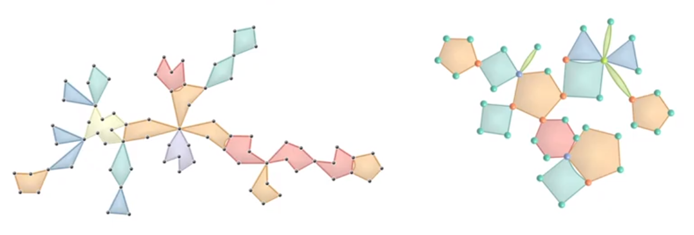
2、基数越大，多边形的面积也越大
3、基数相同的多边形的面积也接近
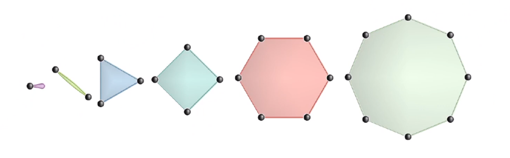
4、多边形不应包含自重叠和翻折
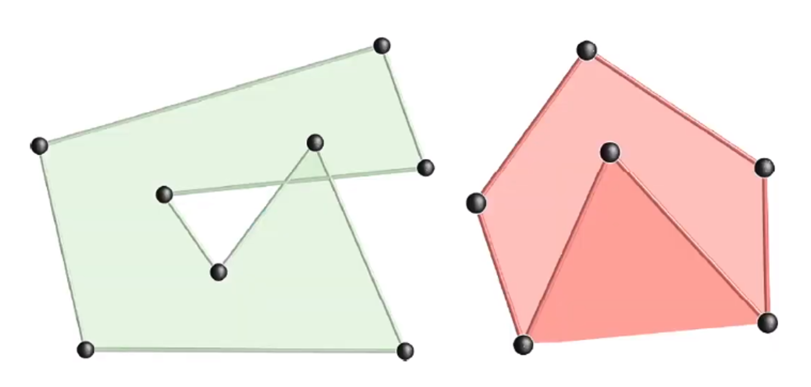
5、避免多边形之间的不必要重叠
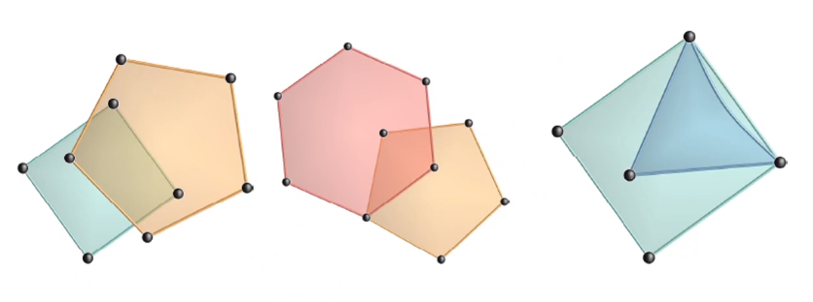
6、若两个多边形有3个以上公共点，则交集的形状应尽可能规则
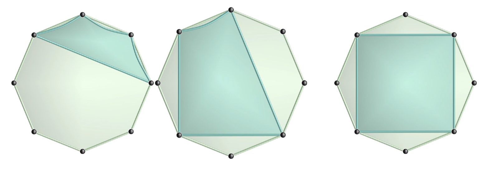
7、节点间不应重叠
8、节点不应出现在它不属于的多边形的边上和内部
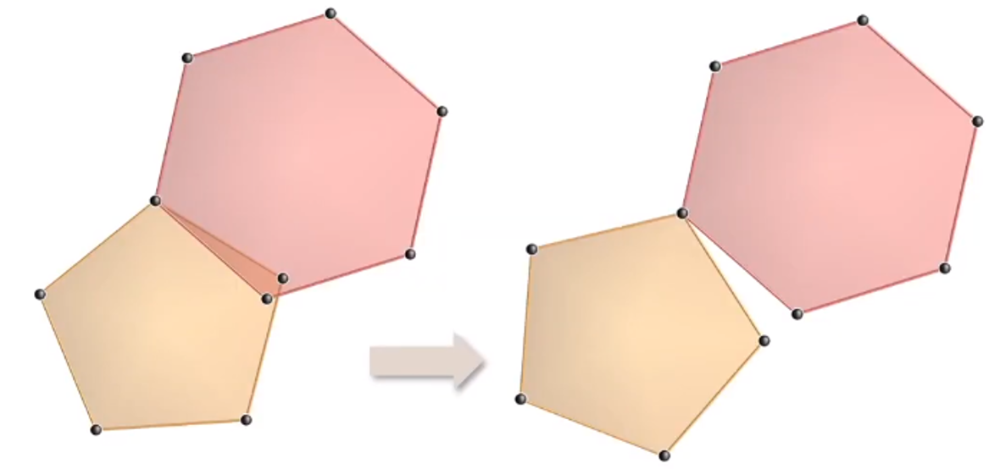
能量定义
- 能量1：多边形规则能量（PRegular）：使每个多边形尽可能接近正多边形（原则1）
- 能量2：多边形面积能量（PArea）：面积与边长的平方成正比（原则2）；保证所有的边长尽可能一致（原则3）
- 能量3：多边形分离能量（PSeperation）：结合欧氏距离和余弦距离（原则5、7、8）
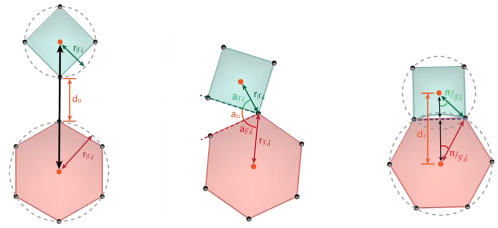 - 能量4：多边形相交能量(PIntersection)：使公共点序列分布尽可能均匀（原则6）
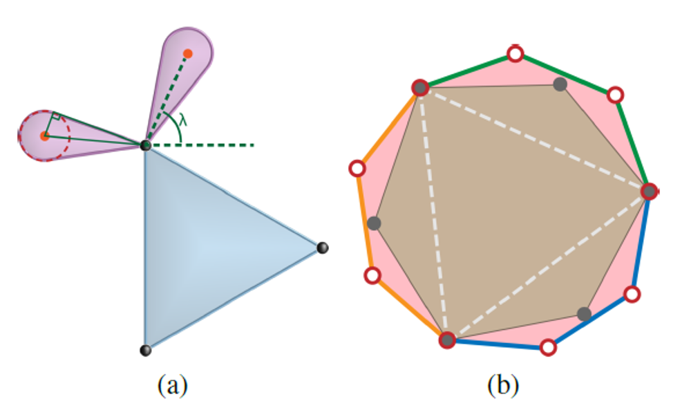
总能量 = PRegular + PArea + PSeperation + PIntersection
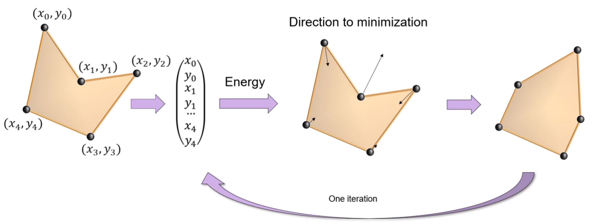
最小化过程
- Step1：微调节点位置：L-BFGS梯度下降
- Step2：点对交换：星形化（原则4）
- 重复Step1、2
原始对偶视图
对偶图：点边互换
支持原始图和对偶图联合优化
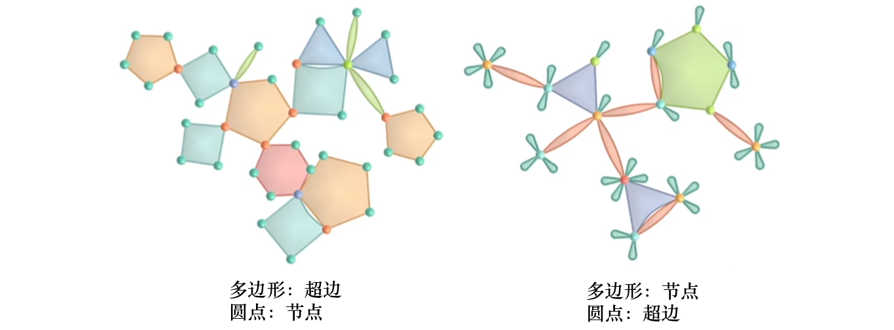
性能
- 时间复杂度：$\omega((|𝑉|+|𝑅|)^4 )$
- 数据集
- 最小数据集：76节点 + 26超边
- 仅优化原始视图：0.25s
- 联合优化原始-对偶视图：1.37s
- 最大数据集：527节点 + 232超边
- 仅优化原始视图：181.69s
- 联合优化原始-对偶视图：268.82s
- 最小数据集：76节点 + 26超边
- 实验环境
- Inter Xeon E-2124G CPU @ 3.4GHz + 64GB RAM
用户实验
- 用户数：21
- 人造数据集
- 12篇论文 + 36作者
- 95篇论文 + 219作者
- 目标
- 对比本工作与三种现有方法（仅原始视图）
- 统计用户计数作者所发表论文数量的正确率
- 统计用户正确计数的速度
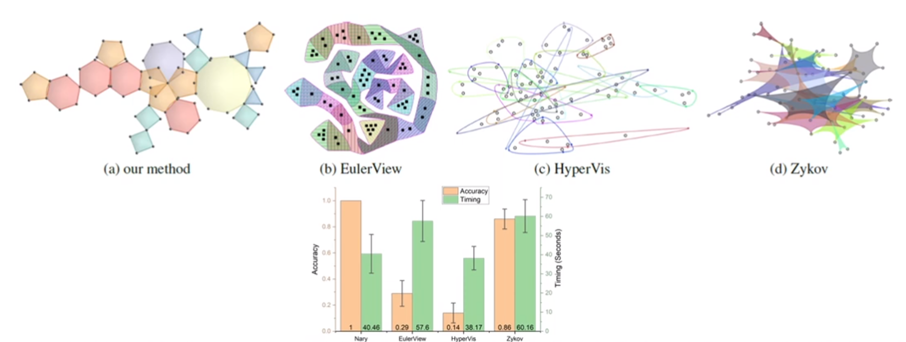
总结
缺点
- 时间复杂度太高 -> 对层次化的图数据布局
- 能量间有冲突，可能部分失效
- 多边形重叠有时处理不好
- 未考虑标签布局问题
优点
- 干净的算法文章，行文流畅
- 评估全面：性能分析+用户实验+案例分析
- 启发
- 扬长避短：评估时承认性能问题，但重心放在效果上
- 自圆其说：提出的8个设计原则在算法设计和优化中均得以满足
- 文章结构：套路成熟，值得借鉴
Questions & Discussion：
✉️ zjuvis@cad.zju.edu.cn